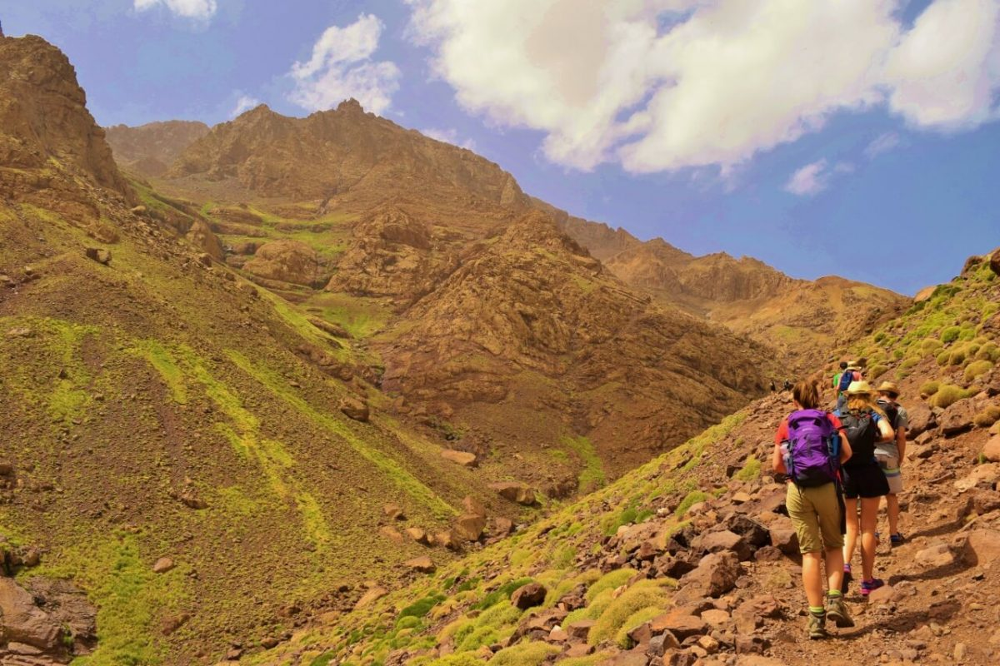
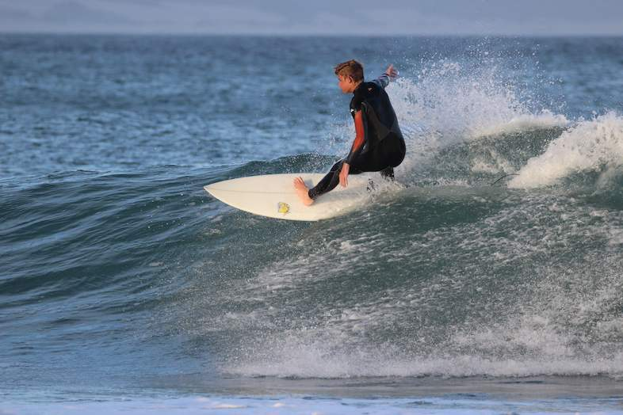
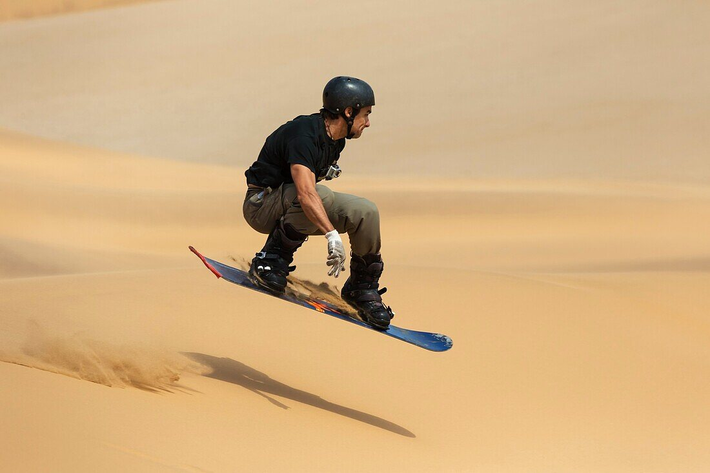
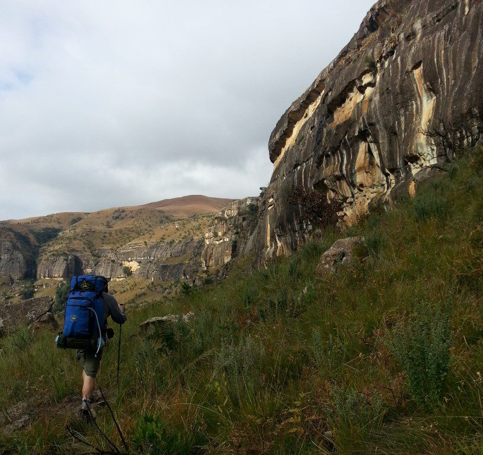

Africa is a continent known for its rich cultural heritage, diverse wildlife, and stunning landscapes. But beyond the traditional safari tours and beach getaways, Africa also offers a plethora of adventure sports activities that will get your adrenaline pumping and provide you with a unique and unforgettable experience.
From coast to coast, Africa boasts a wide range of thrilling activities for adventure seekers of all levels. Whether you're looking to soar through the air, ride the waves, or conquer the highest peak, there's something for everyone on the continent. In this blog post, we will explore some of the most exciting adventure sports to try in Africa.
Mountaineering in the Atlas Mountains, Morocco
Stretching across three countries in North Africa—Morocco, Algeria, and Tunisia—the Atlas Mountains present a captivating landscape for mountaineering enthusiasts seeking an African adventure sports experience. Among these countries, Morocco stands out as a premier destination for mountaineering in the Atlas Mountains due to its accessibility, diverse terrain, and cultural richness.
Morocco's portion of the Atlas Mountains is divided into distinct ranges—namely the High Atlas, Middle Atlas, and Anti-Atlas—each offering a unique mountaineering experience. The High Atlas, in particular, is a popular choice for mountaineers seeking challenging peaks, breathtaking panoramas, and encounters with traditional Berber culture.
One of the most iconic peaks in the High Atlas is Toubkal, North Africa's highest mountain at 4,167 meters. Ascending Toubkal is a rewarding but demanding adventure, requiring a good level of fitness and experience in high-altitude mountaineering. The trek to Toubkal's summit typically starts from the village of Imlil, where visitors can immerse themselves in Berber hospitality and witness the daily life of mountain communities.
For those seeking a more moderate mountaineering experience, the Middle Atlas and Anti-Atlas ranges offer a diverse array of peaks, valleys, and gorges to explore. Jebel Tidirhine in the Middle Atlas and Jebel Sirwa in the Anti-Atlas are popular choices for climbers looking to summit lesser-known peaks while enjoying the tranquility of Morocco's mountain wilderness.
Apart from the natural beauty and physical challenges of mountaineering in the Atlas Mountains, the region's cultural heritage adds a unique dimension to the adventure. Berber villages dot the mountainsides, providing opportunities for travelers to connect with local communities, sample traditional cuisine, and learn about age-old customs and craftsmanship.
While mountaineering in the Atlas Mountains offers a thrilling adventure sports experience, it is essential for climbers to be well-prepared and respect the local environment and culture. Hiring a local guide or joining a reputable tour operator can enhance safety and ensure a more meaningful cultural exchange during the expedition.
In conclusion, mountaineering in the Atlas Mountains of Morocco offers a blend of natural beauty, physical challenge, and cultural immersion that makes it a standout African adventure sports experience. Whether conquering high peaks like Toubkal or exploring hidden valleys in lesser-known ranges, the Atlas Mountains provide a memorable journey for mountaineers seeking to push their limits and discover the rich tapestry of North African landscapes and traditions.
Surfing in Jeffreys Bay, South Africa
Surfing in Jeffreys Bay, South Africa is an exhilarating African adventure sport that offers a unique and awe-inspiring experience for surf enthusiasts from around the world. Known as one of the best surfing destinations globally, Jeffreys Bay, or "J-Bay" as it is affectionately called by locals and surfers alike, boasts some of the most legendary and consistent right-hand point breaks on the planet.
Located along the Eastern Cape coast of South Africa, Jeffreys Bay is not only famous for its world-class surfing conditions but also for its stunning natural beauty, warm waters, and diverse marine life. The town itself is a laid-back surf haven with a vibrant local surf culture, welcoming atmosphere, and breathtaking scenery, making it the perfect setting for a memorable and adventurous surfing experience.
Surfers flock to Jeffreys Bay to ride its legendary waves, most notably the iconic Supertubes, a high-performance wave renowned for its long, fast barrels and epic rides. The powerful swells that roll in from the Indian Ocean create perfect surfing conditions, attracting surfers of all levels, from beginners to professionals, seeking the ultimate wave-riding experience.
In addition to world-class surfing, Jeffreys Bay offers a range of other adventurous activities for adrenaline junkies and nature lovers alike. From shark cage diving and deep-sea fishing to sandboarding and hiking in nearby nature reserves, there is no shortage of thrilling experiences to be had in this coastal paradise.
Beyond the adrenaline-pumping activities, Jeffreys Bay also offers a rich cultural experience with its vibrant local community, diverse cuisine, and lively arts and music scene. Visitors can immerse themselves in the unique blend of African, surf, and coastal influences that make Jeffreys Bay a one-of-a-kind destination for adventure seekers and culture enthusiasts.
Whether you are a seasoned surfer looking to ride some of the best waves in the world or a traveler in search of an unforgettable African adventure, surfing in Jeffreys Bay, South Africa is sure to leave you with lasting memories, new friendships, and a deep appreciation for the beauty and majesty of this incredible corner of the world. So pack your board, grab your wetsuit, and get ready for the surf adventure of a lifetime in the magical waters of J-Bay!
Skydiving over the Namib Desert, Namibia

Skydiving over the Namib Desert in Africa is an exhilarating and unforgettable adventure experience. The Namib Desert is one of the oldest deserts in the world and offers breathtaking views of vast sand dunes and a unique desert landscape from above.
As you jump out of the plane, you will free fall at high speeds while taking in panoramic views of the desert below. The adrenaline rush of skydiving combined with the stunning natural beauty of the Namib Desert makes for a truly thrilling and memorable experience.
African Adventure Sports offers skydiving excursions over the Namib Desert for both experienced skydivers and beginners looking to try this extreme sport for the first time. Safety is a top priority, and expert instructors will guide you through every step of the process to ensure a safe and enjoyable jump.
Whether you are a seasoned skydiver looking to add another epic drop to your logbook or a thrill-seeker seeking a once-in-a-lifetime adventure, skydiving over the Namib Desert is sure to be an unforgettable experience that will leave you in awe of the natural beauty and adrenaline-pumping excitement of this African adventure sport.
Whitewater Rafting on the Zambezi River, Zambia/Zimbabwe

Whitewater rafting on the Zambezi River is widely considered one of the most thrilling and adventurous activities to experience in Africa. The Zambezi River flows through several African countries, but the most popular and challenging section for whitewater rafting is located near Victoria Falls on the border of Zambia and Zimbabwe.
The Zambezi River offers a variety of exhilarating rapids ranging from Class II to Class V, providing an adrenaline-pumping experience for rafters of all skill levels. The rapids are known for their technical challenges, powerful hydraulics, and stunning natural scenery, including towering cliffs and lush riverbanks.
Rafting on the Zambezi River is not only a thrilling adventure but also a unique opportunity to immerse yourself in the natural beauty and wildlife of Africa. Rafters may encounter wildlife such as hippos, crocodiles, and diverse bird species along the riverbanks, adding to the excitement of the experience.
Experiencing whitewater rafting on the Zambezi River is a must-do activity for adventure seekers visiting Africa, offering an unforgettable combination of adrenaline, natural beauty, and cultural richness in one of the continent's most iconic locations.
Hiking and Gorilla Trekking in Bwindi Impenetrable Forest, Uganda

Bwindi Impenetrable National Park in Uganda is renowned for its gorilla trekking experiences, offering visitors a thrilling adventure in the heart of the African jungle. Gorilla trekking in Bwindi is a bucket-list experience that allows you to get up close and personal with endangered mountain gorillas in their natural habitat.
The park is home to almost half of the world's remaining mountain gorilla population, making it a crucial conservation area. Hiking through the dense and lush vegetation of the Bwindi Impenetrable Forest is an adventure in itself, with stunning landscapes and diverse flora and fauna to admire along the way.
Gorilla trekking excursions in Bwindi are led by experienced guides who will take you on a trek to locate a gorilla family. The trek can vary in difficulty depending on the location of the gorillas, but the reward of encountering these remarkable creatures in the wild is truly unforgettable.
In addition to gorilla trekking, Bwindi Impenetrable National Park offers a variety of hiking trails that cater to different fitness levels and interests. From short nature walks to challenging hikes up the steep terrain, visitors can explore the park's diverse ecosystems, waterfalls, and birdlife. The park is also a UNESCO World Heritage Site, recognized for its exceptional biodiversity and conservation efforts.
Overall, hiking and gorilla trekking in Bwindi Impenetrable Forest offer a truly unique and captivating African adventure sports experience that combines wildlife encounters with physical activity and natural beauty. It is an opportunity to immerse yourself in the rich wilderness of Uganda and create memories that will last a lifetime.
Sandboarding in the Namib Desert, Namibia
Sand boarding in the Namib Desert, Namibia is an exhilarating adventure sport that attracts thrill-seekers from around the world. The Namib Desert is home to some of the world's highest sand dunes, providing the perfect playground for sand boarding enthusiasts.
Riding down the steep dunes on a sand board can be an adrenaline-pumping experience, offering a unique way to experience the beauty and vastness of the desert landscape. There are different types of sand boarding, including stand-up sand boarding, where riders stand on a board similar to a snowboard, and lie-down sand boarding, where riders use a specially designed board to ride while lying face down.
The Namib Desert's dunes, especially in the Sossusvlei area, offer a variety of slopes catering to both beginners and experienced sand boarders. Whether you're looking for a leisurely glide down gentle dunes or an intense rush down steep slopes, the Namib Desert has something for everyone.
In addition to the thrill of sand boarding, the Namib Desert also provides breathtaking views of the surrounding landscape, including expansive sand dunes, sparse vegetation, and unique wildlife. The contrast of the red dunes against the blue sky creates a stunning backdrop for this adventurous activity.
Overall, sand boarding in the Namib Desert offers a thrilling and unforgettable experience for adventure enthusiasts looking to try something new and exciting in the heart of Africa.
Scuba Diving in the Red Sea, Egypt

Scuba diving in the Red Sea, Egypt, is considered one of the top African adventure sports for diving enthusiasts. The Red Sea is renowned for its crystal-clear waters, vibrant coral reefs, and a diverse range of marine life, making it a popular destination for scuba divers from around the world.
Divers in the Red Sea can expect to encounter colorful coral gardens, impressive underwater rock formations, and a variety of marine species such as tropical fish, dolphins, sharks, and even the occasional whale shark. The visibility in the Red Sea is typically excellent, allowing divers to explore the underwater world with ease.
There are numerous dive sites along the Red Sea coast of Egypt, including popular locations such as Sharm el-Sheikh, Hurghada, and Marsa Alam. These areas offer a range of diving experiences suitable for both beginners and experienced divers, with options for shore dives, boat dives, and liveaboard trips.
Whether you are looking to explore vibrant coral reefs, dramatic drop-offs, or historic shipwrecks, scuba diving in the Red Sea offers something for everyone. With its warm waters, abundant marine life, and stunning underwater landscapes, the Red Sea is truly a must-visit destination for any adventure-seeking diver looking to experience the beauty of African marine ecosystems.
Bungee Jumping at Victoria Falls, Zambia/Zimbabwe

Bungee jumping at Victoria Falls is a thrilling and exhilarating adventure sport that offers a unique and unforgettable experience in Africa. Victoria Falls, located on the border of Zambia and Zimbabwe, is one of the largest and most famous waterfalls in the world. The bungee jumping site is situated near the iconic Victoria Falls Bridge, which spans the Zambezi River gorge.
Bungee jumping at Victoria Falls offers participants the opportunity to leap off the bridge and freefall towards the roaring waters of the Zambezi River below. The 111-meter (364-foot) drop provides an adrenaline-pumping experience as jumpers plunge towards the river before being rebounded back up by the bungee cord.
The stunning natural beauty of Victoria Falls, combined with the thrill of bungee jumping, creates a truly unforgettable adventure for adrenaline junkies and adventure enthusiasts. The experience allows participants to conquer their fears, test their limits, and enjoy breathtaking views of the majestic waterfall and surrounding landscape.
Safety is paramount in bungee jumping, and the operators at Victoria Falls adhere to strict safety standards to ensure a secure and thrilling experience for participants. Whether you are a seasoned thrill-seeker or a first-time jumper, bungee jumping at Victoria Falls offers an African adventure sports experience like no other..
Safari Hot Air Ballooning in Serengeti National Park, Tanzania

Safari hot air ballooning in the Serengeti National Park in Tanzania offers a unique and exhilarating way to experience the African wilderness from a different perspective. The Serengeti is known for its vast plains teeming with wildlife, including the famous annual wildebeest migration.
Hot air ballooning allows visitors to float silently above the Serengeti, offering breathtaking views of the landscape and the chance to spot wild animals from the air. The experience typically starts before sunrise, as you witness the inflation of the balloon and take off into the sky as the sun rises over the savannah.
As you glide above the Serengeti, you may see herds of elephants, giraffes, zebras, and possibly even predators like lions and cheetahs from a safe distance. The peaceful and serene experience of hot air ballooning provides a unique perspective on the vastness and beauty of the African wilderness.
After the balloon ride, participants usually enjoy a bush breakfast in the Serengeti, providing a memorable end to this once-in-a-lifetime experience. Safari hot air ballooning in the Serengeti National Park is a must-do activity for adventure enthusiasts and nature lovers looking to immerse themselves in the stunning landscapes and wildlife of Africa.
Canyoning in the Drakensberg Mountains, South Africa
Canyoning in the Drakensberg Mountains of South Africa is an exciting African adventure sport that offers a unique way to explore the stunning natural landscapes of the region. The Drakensberg Mountains are known for their rugged beauty, with towering cliffs, deep gorges, and crystal-clear rivers making it an ideal playground for canyoning enthusiasts.
Canyoning, also known as canyoneering, involves navigating down a canyon or gorge using a variety of techniques such as hiking, scrambling, swimming, abseiling, and sometimes even jumping into pools of water. The Drakensberg Mountains offer a range of canyoning opportunities for all skill levels, from beginner-friendly routes with gentle descents to more challenging adventures that require technical skills and experience.
Guided canyoning tours are available in the Drakensberg Mountains, allowing participants to safely explore the canyons under the supervision of experienced guides who are familiar with the terrain and can provide instruction on proper techniques. These tours typically provide all the necessary equipment, including wetsuits, helmets, harnesses, and ropes.
Canyoning in the Drakensberg Mountains offers a thrilling way to discover the region's hidden gems, from cascading waterfalls and serene rock pools to dramatic cliffs and lush forests. It is a great way to experience nature in a new and exciting way while enjoying the adrenaline rush of navigating through challenging terrain.
Overall, canyoning in the Drakensberg Mountains is a fantastic African adventure sport that promises unforgettable experiences and breathtaking views for outdoor enthusiasts looking to immerse themselves in the beauty of South Africa's natural landscape.
From the heights of mountain peaks to the depths of underwater worlds, Africa offers a diverse range of adventure sports activities that will ignite your sense of adventure and leave you with lasting memories. Whether you're seeking thrills, adrenaline kicks, or unique experiences in the great outdoors, the continent has something to offer for every type of adventurer. So pack your gear, lace up your boots, and get ready to embark on an African adventure like no other!
Africa offers a wide array of adventure sports activities that cater to all interests and skill levels, making it an ideal destination for thrill-seekers and outdoor enthusiasts. Whether you're looking to conquer a mountain peak, ride the waves, soar through the sky, or hike through the jungle, there's no shortage of adrenaline-pumping experiences to be had on the continent. So pack your bags, get ready to push your limits, and embark on an African adventure of a lifetime!